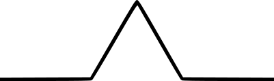
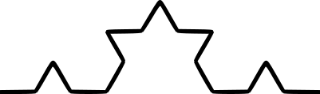

Comience con una línea recta. Este objeto inicial también se llama el iniciador.
Divídalo en tres partes iguales. Luego reemplace el tercio medio por un triángulo equilátero y
quite su base.

Esto completa el paso básico de la construcción. Una reducción de esta figura, hecha de cuatro partes,
se reutilizará en las siguientes etapas. Esta es llamada el generador.
Ahora repetimos, tomando cada uno de los segmentos de línea resultantes, dividiéndolos en tres
partes iguales, y así sucesivamente.

La auto-similitud se construye en el proceso de construcción, es decir,
cada una de las cuatro partes en el paso k es de nuevo una versión reducida - por un factor de
3 - de toda la curva en
la etapa k-1 anterior.
Volvamos a la curva original de Koch y discutamos su longitud. En cada etapa obtenemos una curva. Después
de la primera,
nos quedamos con una curva que se compone de 4 segmentos de línea de la misma longitud, después de la
segunda etapa obtenemos 42,
y luego 43 segmentos de línea después de la tercera etapa, y así sucesivamente . Si
la línea original tenía longitud L, entonces
después del primer paso un segmento de línea tiene longitud L×1/3, después del segundo
paso tenemos L×1/32,
luego L×1/33, y así sucesivamente.
Puesto que cada una de las etapas produce una curva de segmentos de línea, no hay problema en la medición
de sus respectivas longitudes.
Después del primer paso es 4×L×1/3, luego
42×L×1/32 y así sucesivamente. Después del paso
k se tiene 4k×L×1/3k, Observamos que de paso a
paso la longitud de las curvas crece por un factor de 4/3.
Ahora sea Pk el perímetro de la curva de koch en la etapa k. Claramente